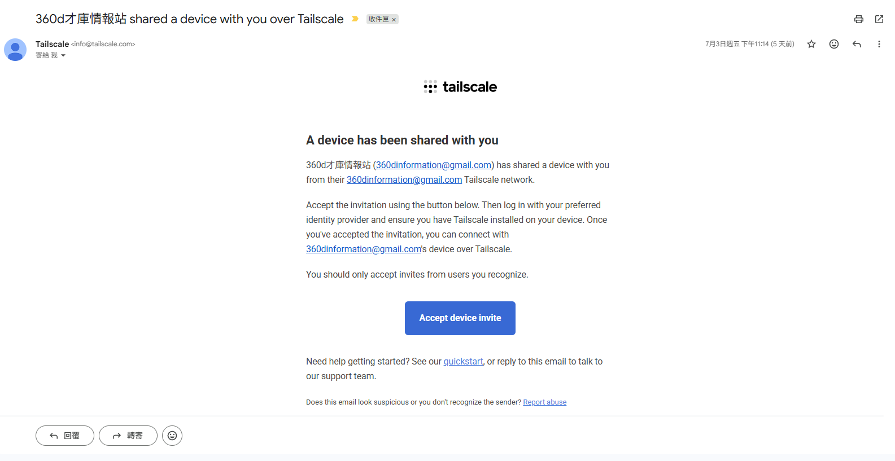
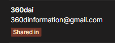

Tailscale 安裝闖關
六關全破，解鎖才庫內網 AI 工具通行證
企業內部要用 AI 工具，第一步是資安意識，第二步是帳號權限管理。少了任何一個，內部資料都可能外洩。
Tailscale 的免費版把這兩件事一次解決：它建立一條只有授權帳號能進入的私有網路，讓你安全連上才庫內網伺服器。這是目前最快速的做法。
接下來六關，會一步步帶你從下載安裝，到成功接上內網伺服器。準備好就出發。
打開官方下載頁，選你的作業系統（這裡以 Windows 為例）。
按下白色的「Download Tailscale for Windows」，執行下載的安裝檔，一路點下一步到底。
安裝完成後，工作列右下角會出現 Tailscale 的小圖示，代表軟體已就緒。
安裝後開啟 Tailscale，選擇用 Google 帳號登入。記住這個 Email，下一關要用。
登入後如果畫面變成左右兩半：左邊是一排作業系統圖示、右邊空白只有一個轉圈圈的小圓圈，別傻等。這個畫面只是再次提醒你安裝軟體，不是串接分享的頁面。把滑鼠滾輪滑到最下面，會看到一個「跳過（Skip）」按鈕，按下去就對了。
把你剛剛註冊登入用的那個 Google 帳號 Email，填到回報表單裡送出。
這一步是讓管理員知道要把內網權限分享給哪個帳號。Email 一定要跟你登入 Tailscale 的完全一致，不然會收不到邀請。
管理員（360d才庫情報站）會在今天 7/8 下午 3:00，把內網伺服器的讀取權限分享給你填的 Email。
時間到之後，你的信箱會收到一封標題為「360d才庫情報站 shared a device with you over Tailscale」的信。點信裡藍底白字的「Accept device invite」，進到頁面後再按一次確認。
小提醒：下午 3:00 前信還沒到是正常的，時間到再回來收信就好。

接受邀請後，頁面上會看到管理員分享給你的裝置，像下圖這樣，標著「Shared in」。
看到之後，到「才庫大家庭記事本」的『Tailscale 軟體安裝回報』下方，留言「已完成」。這樣管理員就知道你整套都設定好了。

恭喜！六關全破
你已經完成 Tailscale 安裝與內網串接，正式拿到才庫 AI 工具的通行證。有問題隨時在記事本敲一聲。